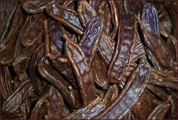
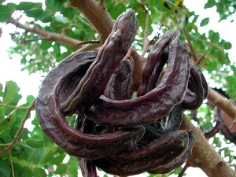
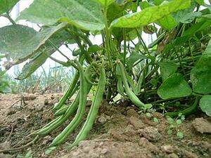

ϫⲓⲉⲓⲣⲉ S, ϫⲓⲓⲣⲓ, ϫⲓⲛⲓⲣⲓ B nn m, pod of carob & of other plants: K 176 B ⲛⲓϫ. خرنوب; Lu 15 16 B ϫⲓⲛ. (S ϭⲁⲣⲁⲧⲉ) κεράτιον ﺧ׳, cit Cat 158 B ϫⲓⲛⲛ.; PMéd 156 S ϫ. ⲛϣⲟⲛⲧⲉ, Ann 18 285 S in recipe ⲙⲟⲟⲩ ⲙⲡϫ., ShC 73 111 S ⲉⲩⲥⲱϩⲙ ⲙⲡϫ. ϣⲏⲙ, Bal S ⲡϣⲏⲙ ⲛϫ. ⲉⲧⲉⲭⲣⲓⲁ ⲛⲡⲉⲧⲛⲏⲓ. Cf ? ϫⲓⲉⲓⲗⲉ. V Rec 15 125, OLZ '27 565.
(noun male)
anatomy, species
pod of carob & of other plants



1: pod of carob, 2: pod (of any plant)
complete
775a
ϫⲓⲛⲓⲣⲓ, ϫⲓⲛⲛⲓⲣⲓ B v ϫⲏⲣⲓ & ϫⲓⲉⲓⲣⲉ.
782a
See also:
Homonyms:
| view | ϭⲁⲣⲁⲧⲉ S | (noun) carob pod = κερατιον2613 |
Homonyms:
| view | ϫⲏⲣⲉ SF ϫⲉⲉⲣⲉ S ϫⲏⲣⲓ B ϫⲉⲣⲉ F | (noun female) threshing-floor [αλων]
corn threshed or season of threshing2444 |
| view | ϫⲏⲣⲓ, ϫⲓⲛⲓⲣⲓ B | (noun male) filth [ρυπος]2445 |
| view | ϫⲏⲣⲓ B | (noun) meaning uncertain3330 |